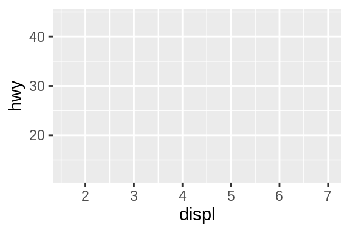
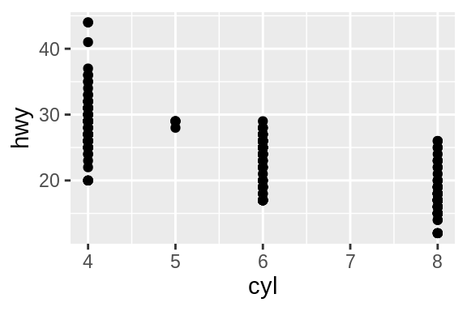
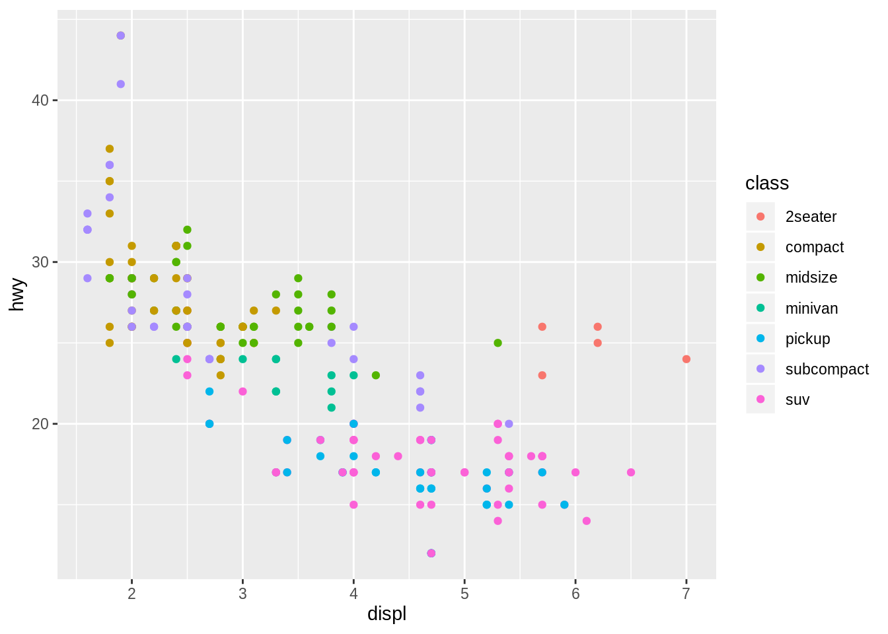
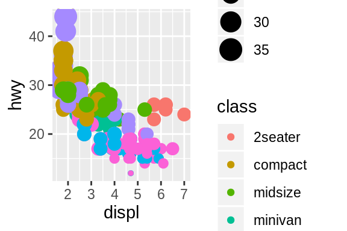
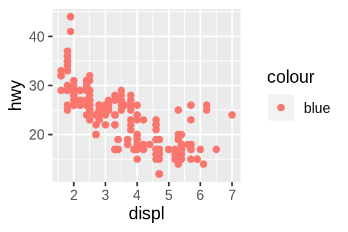

2 Visualization
Embracing the grammar of graphics.
This chapter discusses plotting with the ggplot2 package.
2.1 Basics for visualisation in R using {ggplot2}
Click here to show setup code.
In the {tidyverse} the standard package for visualisation is {ggplot2}. The functions of this package follow a quite unique logic (the “grammar of graphics”) and therefore require a special syntax. In this section we want to give a short introduction, how to get started with {ggplot2}.
The main function in the package is ggplot(), which prepares/creates a graph.
By setting the parameters of the function, you can:
1. choose the dataset to be plotted in the parameter data
2. choose the mapping of the variables to the axes (or further forms of setting apart data) in the parameter mapping. This parameter takes the result of the function aes(), which you will get to know in many different examples.

This created only an empty plot, because we did not tell {ggplot2}, which geometry we want to use to display the result.
We do this by adding (literally using + after the ggplot()-call) a different function starting with geom_ to provide this information.
This is maybe the most basic plot you can create.
To map a different variable than disp to the x-axis, change the respective parameter in aes().

You can exchange the variables to be plotted freely, without changing anything else to the rest of the code.

2.2 Tweaks and tricks
Click here to show setup code.
Change the color of the plotted data by setting parameter color in the geom()-function to a character variable with the color name.


Different colors can be mapped to the values of a variable as a further aesthetic property of the plot.

One more degree of freedom is the shape of the symbols to be plotted.
## Warning: The shape palette can deal with a maximum of 6 discrete values because
## more than 6 becomes difficult to discriminate; you have 7. Consider
## specifying shapes manually if you must have them.## Warning: Removed 62 rows containing missing values (geom_point).

And last but not least, the size of the plotted symbols can be linked to numeric values of the mapped variable.

You can mix different aesthetic mappings in order to produce a plot with densely packed information.

Choosing a specific color in the mapping-argument of ggplot() does not work, since a mapping of a variable to an aesthetic is expected.
Let’s try passing a color anyway…
## Error in FUN(X[[i]], ...): object 'blue' not foundR treats objects without quotation marks in a special way, expecting them to be variables.
Since blue is not a variable of mpg, this did not work.
The following should shed some light on the difference between objects with and without quotation marks.
## # A tibble: 234 x 11
## manufacturer model displ year cyl trans drv cty hwy fl class
## <chr> <chr> <dbl> <int> <int> <chr> <chr> <int> <int> <chr> <chr>
## 1 audi a4 1.8 1999 4 auto(l5) f 18 29 p compa…
## 2 audi a4 1.8 1999 4 manual(m5) f 21 29 p compa…
## 3 audi a4 2 2008 4 manual(m6) f 20 31 p compa…
## # … with 231 more rows
## [1] "mpg"So what if we pass the color as a character variable?

At least there was no error, but now the constant value blue is mapped to the first default color of the color mapping, which happens to be red.
We could have been fooled, if it had been blue…
Another way to better display your data can be semi-transparency. This is useful to get an impression of how many data points share the same coordinates.
Within the aes()-function you can not only provide the bare variable of the data set, but you can also pass a function of a variable.

Trying to map aesthetics in the geom()-function, does not work.
## Error in rep(value[[k]], length.out = n): attempt to replicate an object of type 'builtin'
2.3 Labels and layers
Click here to show setup code.
For character variables there is further way of integrating its value to a plot.
geom_text() takes a parameter label, which influences the plot in the following way.

Let’s try to map this parameter to a variable (here: drv) of our dataset in the mapping parameter of ggplot().

Right, of course we need to pass the variable without quotation marks, otherwise it is interpreted as a (constant) character variable.
When changing this, a vector with the values of the variable is passed on to geom_text().
This is one way of including the values of character variables in a plot.

By adding more than one geom()-function, more than one geometry is added to the plot.

Since this looks just slightly odd, let’s try to make it more apparent, what is happening.
ggplot(
data = mpg,
mapping = aes(x = displ, y = hwy, label = drv)
) +
geom_point(color = "blue") +
geom_text(size = 10)
It is also possible ot specify the mapping in the geom()-function.
This way, when adding more than one geometry, you can choose different specifications for the mapping in each of the geom()-functions.
ggplot(
data = mpg,
mapping = aes(x = displ, y = hwy)
) +
geom_point(color = "blue") +
geom_text(
mapping = aes(color = class, label = drv),
size = 10,
alpha = 0.2
)
This can be dangerous sometimes though.
A good approach is always to define the mapping globally in ggplot() when possible.

This would be redundant:
ggplot(
data = mpg
) +
geom_point(mapping = aes(x = displ, y = hwy)) +
geom_rug(mapping = aes(x = displ, y = hwy))
And here we have a mismatch between the two geometries, since the y-mapping is referring to different variables of the dataset.
ggplot(
data = mpg
) +
geom_point(mapping = aes(x = displ, y = hwy)) +
geom_rug(mapping = aes(x = displ, y = cty))
Displaying a scatter plot with an overlaid smooth curve fitted to the data is made very easy by the geometry function geom_smooth()
## `geom_smooth()` using method = 'loess' and formula 'y ~ x'
The default for the smoothing method is set to auto, which translates to a LOESS (locally estimated scatterplot smoothing) method, when dealing with fewer than 1000 observations.
Changing the method to “lm”, a linear model will be fitted and displayed in your plot.

2.4 Plotting: statistical summaries
Click here to show setup code.
Some geom()-functions do some transformations and calculations behind the scenes before the data are visualized.
One such function is geom_smooth() from the last section.
Also geom_bar() does some transformations first.
It just needs a mapping for the x-axis.
Once that is done, the y-values displayed for each value of the x-variable are the numbers of of times that the x-value occurs in the dataset.
So basically the different values are counted.


## `geom_smooth()` using method = 'loess' and formula 'y ~ x'
2.5 Facet plots
Click here to show setup code.
One helpful feature that {ggplot2} offers is the facet plot.
This means, that for each value of a given variable a different sub-plot is created.
The relevant functions for this are facet_wrap() and facet_grid().
The former can be used like this.

The latter has a few more options that you can play with. Primarily, you can pass two variables to the function, one of which will determine the facetting along the rows and the other will determine the column facetting.

The first argument of facet_grid() is by default rows.
If you pass a variable (needs to be the result of a call to vars() with the unquoted variable name as its parameter) to it, as many plots will be horizontally lined up, as the variable has distinct values.

Specifically choose parameter cols of facet_grid() to vertically stack the plots.
ggplot(
data = mpg,
mapping = aes(x = displ, y = hwy)
) +
geom_point() +
facet_grid(cols = vars(year))